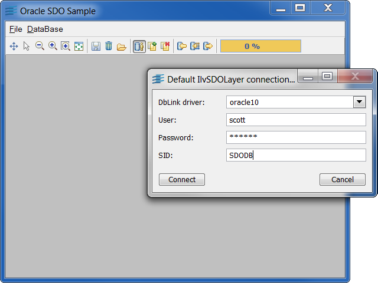
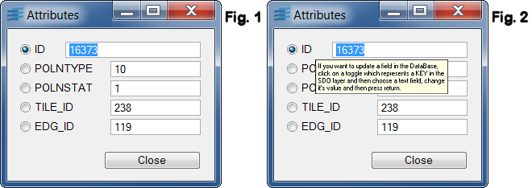
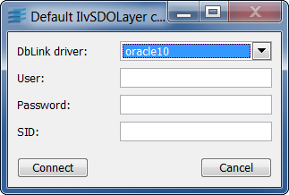
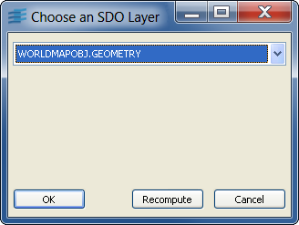
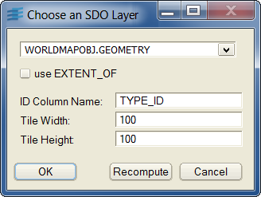

Sample: oracle
Rogue Wave Views Maps Oracle SDO Sample
This sample shows how you can use Views Maps
with Oracle Spatial, also known as Oracle SDO (Spatial Data Option).

The sample provides source code that shows how to:
- Export vector data read with a Views Maps Reader to an Oracle
Spatial Database.
- Import vector data from an Oracle Spatial Database into Views.
- Implement Load-on-Demand with data imported from an Oracle
Spatial Database.
This sample is able to handle Oracle Spatial relational model and
Oracle Spatial object model (since Oracle 9 and above).
Note for Environment Configuration
Do not forget to set the ORACLE_HOME environment variable.
As the ilvdbmaps library uses the dynamically loadable module of DB Link, do not forget
to rebuild the dynamically loadable versions of dbora9(1) (on Unix) and to install the
DLLs (on Windows). For more information on this subject, see the DB Link User's Manual
at Chapter 7.
On Unix platforms, add in your LD_LIBRARY_PATH variable (SHLIB_PATH on HP-UX) the path
$ORACLE_HOME/lib and of course, the path $ILDHOME/lib/$PLATFORM/sharedXXX.
On Windows platforms, add in your PATH variable, the path %ORACLE_HOME%\bin and the path
for DB Link %ILDHOME%\lib\x86_.net2005_8.0\dll_mda.
About Oracle Spatial
Oracle SDO is the spatial extension of Oracle in its 7.3 version. This
extension has been renamed to Spatial Cartridge in the 8.0 version, and
has been renamed again to Oracle Spatial in the 8i version.
Oracle Spatial can work either in relational or object modes:
-
In relational mode, each SDO Layer relies on four specific Oracle tables,
which are called layerName_SDOGEOM (which handles the
geometries),
layerName_SDOLAYER (which handles information about
tiling level and layer specific information),
layerName_SDODIM (which handles information about the
boundaries of the layer, its dimensions, and so on) and
layerName_SDOINDEX (which handles the Spatial indexation
information).
- In object mode, one SDO Layer relies on a single
table that has a SDO_GEOMETRY column, in association with an
index and a global table SDO_GEOM_METADATA (USER_SDO_GEOM_METADATA
in oracle 9i) that stores the layer information for all layers.
Oracle Spatial allows you to store georeferenced objects in an
Oracle database and to perform spatial queries, such as getting the list of objects
that intersect a specific polygon, and so on.
For more information about this extension, refer to the Oracle
OnLine documentation.
How Works the Sample
This is the toolbar used in the sample:
Description:
- This button enables the pan zoom interactor. The left mouse button allows you to
pan the current view (translating it while dragging the left mouse button). The right (or middle, or mouse wheel)
mouse button allows to zoom in/out the view. The sample uses the non opaque zoom mode of the pan zoom interactor.
 Allows you to select a graphic object. If this graphic has been retrieved from a map feature
that had attributes, then selecting the graphic will pop a window showing its attributes (Fig. 1). Note that the automatic
reading of the attributes is a feature of the Object model classes (
Allows you to select a graphic object. If this graphic has been retrieved from a map feature
that had attributes, then selecting the graphic will pop a window showing its attributes (Fig. 1). Note that the automatic
reading of the attributes is a feature of the Object model classes (IlvObjectSDOFeatureIterator). Thanks to the
IlvObjectSDOWriter, you have the possibility to change the attributes of one or more objects attributes. To do so,
check one of the attributes names that will be used as an SQL Key and then change the value of the desired attribute:
pressing the Return key will commit the change in the DB.

In Figure 2, the user has chosen to change the 'TYPE_DESC' attribute of all the DB rows having their 'PPPTNAME'
set to 'SAN JOSE'.
- Unzooms your view into this rectangle.
- Zooms your view into this rectangle.
- Activates the zoom interactor so that you can drag a rectangle and fit your view
into this rectangle.
- Shows all data of your view into this rectangle.
- Saves an Rogue Wave Views
.ilv file (will also save the Load-On-Demand layers).
 Erases all the Load-On-Demand layers, their contents, the debug view, and so on.
Erases all the Load-On-Demand layers, their contents, the debug view, and so on. Loads a map file thanks to the
Loads a map file thanks to the IlvMapLoader class. You can use this in order to
load a shapefile for instance (a vectorial format) that you will be able to write down into Oracle SDO. To load .ilv
files, use the Open entry of the File menu.- Pops a connection panel allowing the connection to the Oracle DB where the SDO
package should be available. Figure 3 shows the connection panel where you have to give the Rogue Wave DB Link
driver (the dbora9 driver will be used in this example), the user name, his password and the Oracle SID.

To have an Oracle account correctly tuned for this sample, please contact your
DBA.
- Creates a new SDO layer in the Oracle DB under the current connection parameters.
A panel will be popped in order to ask the layer name. You can not give a name that already exists in the DB: this
will raise an Oracle error (but you can drop the layer before). Creating or deleting Oracle tables requires certain
privileges.
- Drops an SDO layer. This will pop a new panel allowing to choose a layer (Fig. 4:
the layer 'ROADS' will be dropped). This panel has a "re-compute" button that allows you to update the list of layers
in the current combo box.

Creating or deleting Oracle tables requires certain privileges.
- Saves a map file into an SDO layer. It is assumed that you have previously loaded
a vectorial map file (shapefile for example). This will pop a new panel allowing to choose a layer (Fig. 4).
You can insert multiple files into an SDO layer. This feature uses the
IlvSDOWriter or the IlvObjectSDOWriter whether
you are using the relational or the Object model. When the writer is done, it proposes a tiling panel where you can
give the tiling level for the Spatial Indexation (an estimated value is given and can be used). Do not use values
smaller than 1. It is not recommended to ignore the indexation by canceling the Panel: the spatial indexes will not be
created and you will have troubles with Load-On-Demand. For more information about the Tiling process and the
Spatial Indexation, see the Oracle Spatial documentation.
- Allows you to use the Load-On-Demand feature on a chosen SDO layer.
It is assumed that Spatial Indexes has been correctly created. The sample uses an
IlvMapAdapter: you must tune it so that it fits your data.
The current map adapter uses a geographic projection. This button will pop a Panel (Fig. 5) allowing you to choose a layer and
to set some other parameters of the class IlvObjectSDOLayer such as the ID column name (the name of a column in the SDO layer
that can be considered as a unique Key), the tile width (the with of one Load-On-Demand tile in the DB coordinate
system) and the tile height.

In this example (Fig. 5), the user has chosen to load the 'WORLD' SDO layer (the geometry column that will be loaded up
is 'GEOMETRY' here), where the layer has an ID (unique Key) column name 'TYPE_ID' and a tile width and a tile height
of 100.
- Loads a complete SDO layer from the DB. This will pop a new panel allowing you to choose a
layer (Fig. 4).
- A gauge that shows the evolution of a read/write process. It is not active in Load-On-Demand
mode.
Classes involved:
IlvSDOWriterIlvSDOFeatureIteratorIlvSDOLayerIlvSDOUtilIlvObjectSDOWriterIlvObjectSDOFeatureIteratorIlvObjectSDOLayerIlvObjectSDOUtil
Source files: